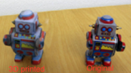
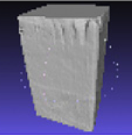
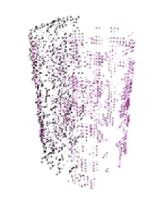

Datasets

Representing 3D geometry for different tasks, e.g. rendering and reconstruction, is an important goal in different fields, such as computer graphics, computer vision and robotics. Robotic applications often require perception of object shape information extracted from sensory data that can be noisy and incomplete. This is a challenging task and in order to facilitate analysis of new methods and comparison of different approaches for shape modeling (e.g. surface estimation), completion and exploration, we provide real sensory data acquired from exploring various objects of different complexities. The dataset includes visual and tactile readings in the form of 3D point clouds obtained using two different robot setups that are equipped with visual and tactile sensors. During data collection, the robots touch the experiment objects in a predefined manner at various exploration configurations and gather visual and tactile points in the same coordinate frame based on calibration between the robots and the used cameras. The goal of this exhaustive exploration procedure is to sense unseen parts of the objects which are not visible to the cameras, but can be sensed via tactile sensors activated at touched areas. The data was used for shape completion and modeling via Implicit Surface representation and Gaussian-Process-based regression, in the work “Object shape estimation and modeling, based on sparse Gaussian process implicit surfaces, combining visual data and tactile exploration”, and also used partially in “Enhancing visual perception of shape through tactile glances”, both studying efficient exploration of objects to reduce number of touches.
 
Visual and Tactile 3D Point Cloud Data from Real Robots for Shape Modeling and Completion
We present a novel approach and database which combines the inexpensive generation of 3D object models via monocular or RGB-D camera images with 3D printing and a state of the art object tracking algorithm. Unlike recent efforts towards the creation of 3D object databases for robotics, our approach does not require expensive and controlled 3D scanning setups and aims to enable anyone with a camera to scan, print and track complex objects for manipulation research. The proposed approach results in detailed textured mesh models whose 3D printed replicas provide close approximations of the originals. A key motivation for utilizing 3D printed objects is the ability to precisely control and vary object properties such as the size, material properties and mass distribution in the 3D printing process to obtain reproducible conditions for robotic manipulation research. We present CapriDB – an extensible database resulting from this approach containing initially 40 textured and 3D printable mesh models together with tracking features to facilitate the adoption of the proposed approach.